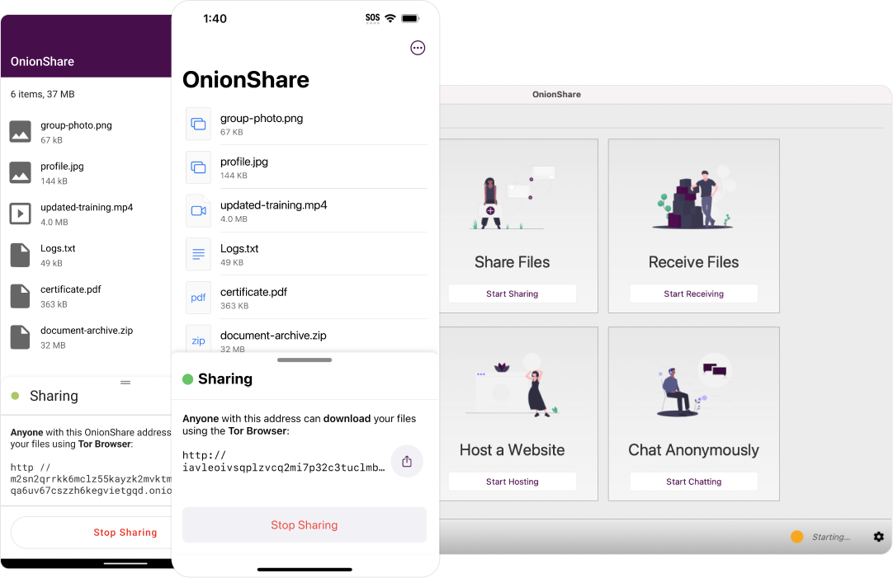

Productivity + Privacy
🧅 OnionShare is an open-source tool that lets you securely and anonymously share files, host websites, and chat with friends using the Tor network.
Download OnionShare Scroll Down
Download OnionShare
Desktop Apps
Mobile Apps
OnionShare's mobile applications are developed in collaboration with Guardian Project and The Calyx Institute.
Why OnionShare?
Mobile-Ready
Take OnionShare with you on the go. Share files privately wherever you are.
Available Everywhere
OnionShare is available for Windows, Mac, and Linux, and comes preinstalled in operating systems like QubesOS, Tails, and ParrotOS.
More Than Sharing
OnionShare allows you to quickly host an onion site, chat, and create a private dropdown in addition to sharing files!
Included With
Qubes OS is a reasonably secure operating system.
Tails is a Tor-based OS loaded from a USB stick.
Whonix uses VMs for OS functionality to achieve security through isolation.
Parrot OS is an operating system for developers and security specialists.